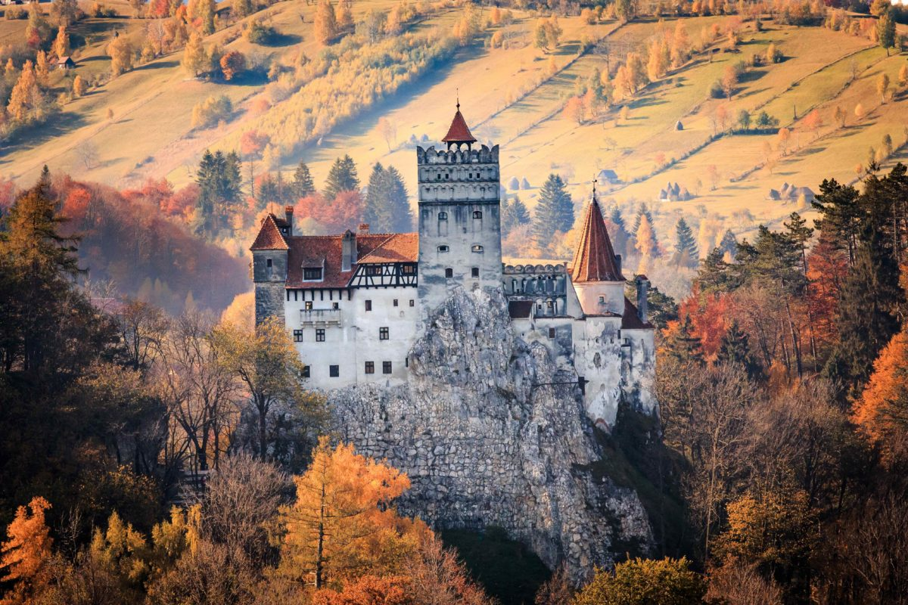
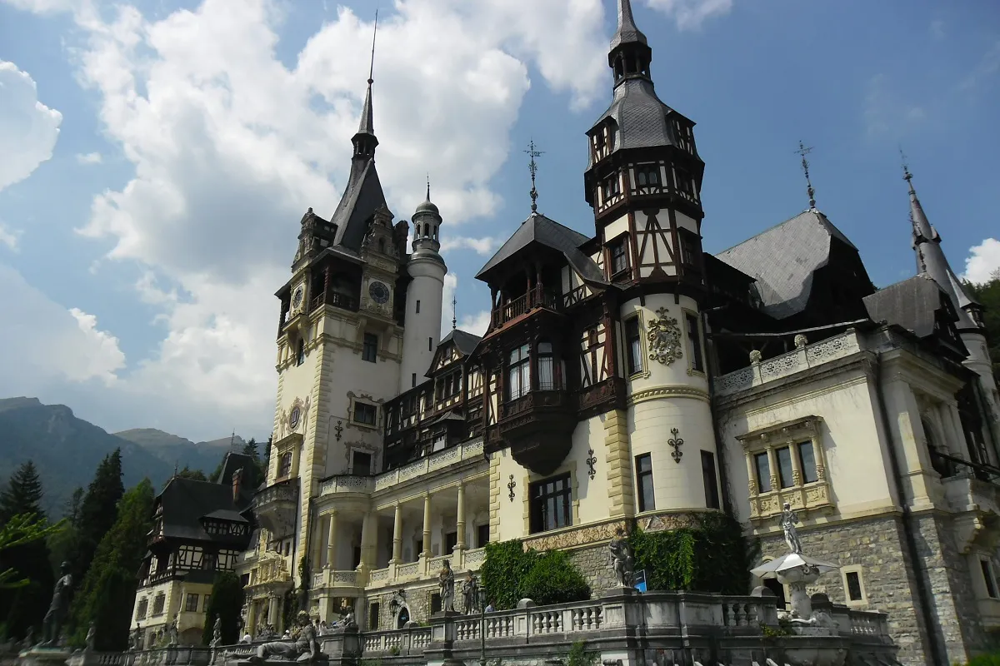
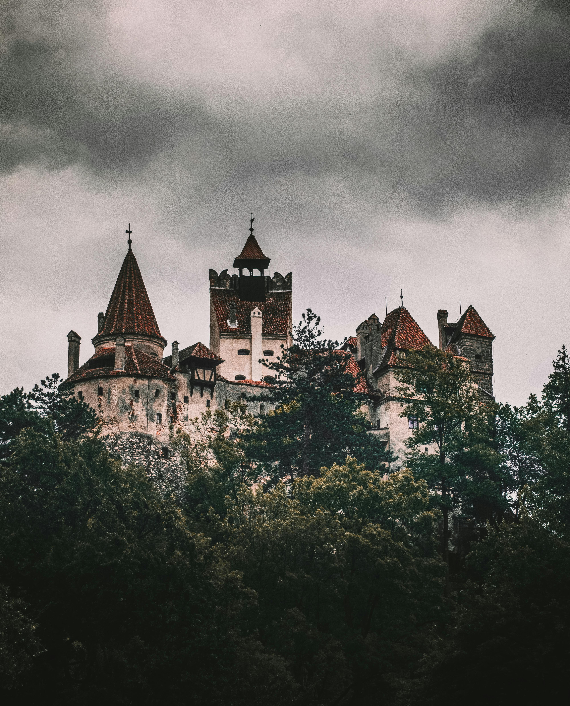
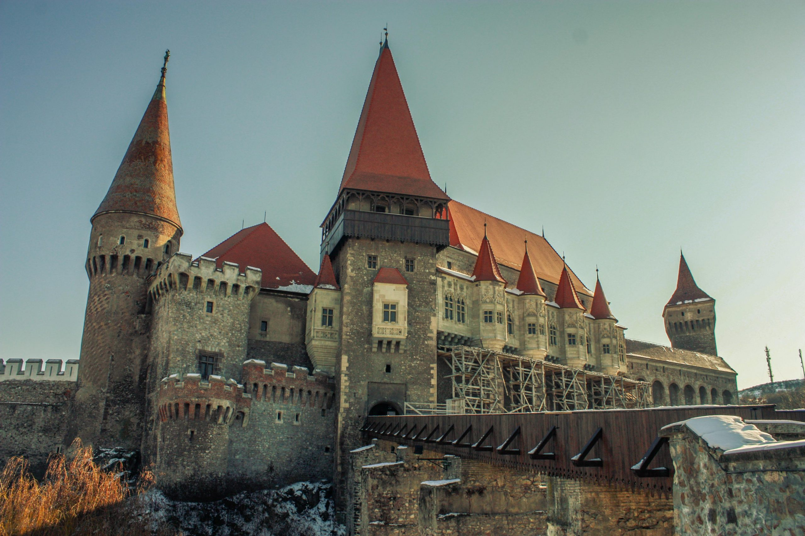
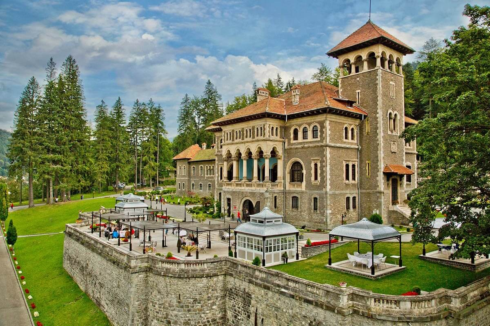
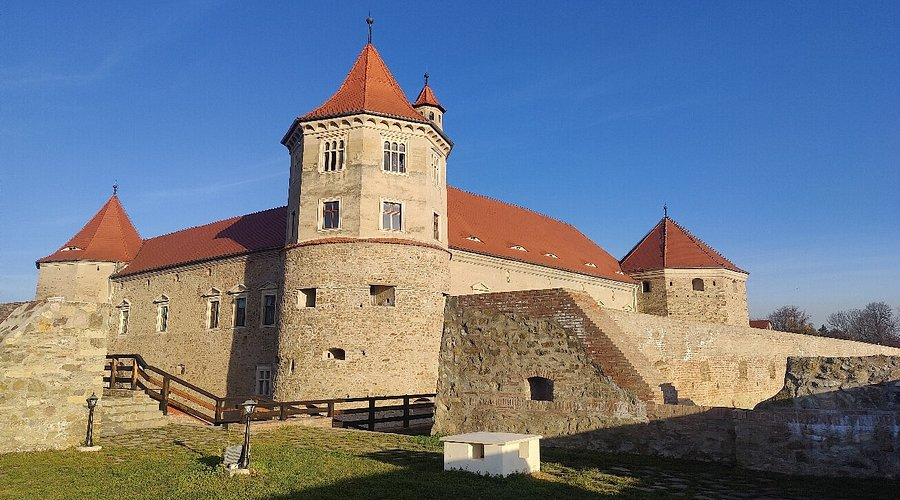
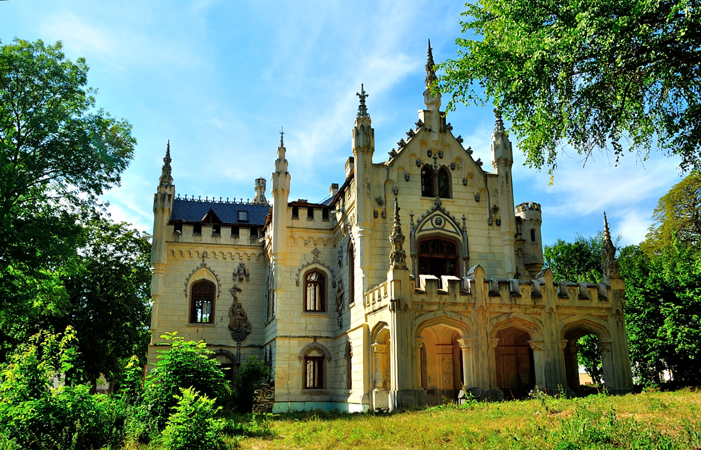
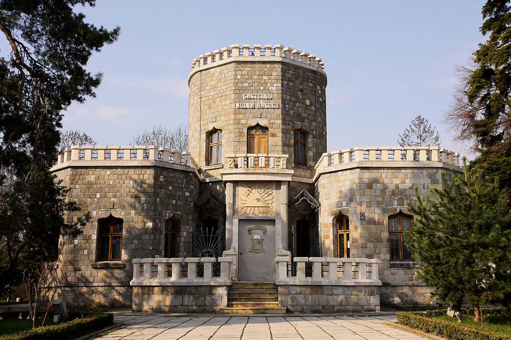
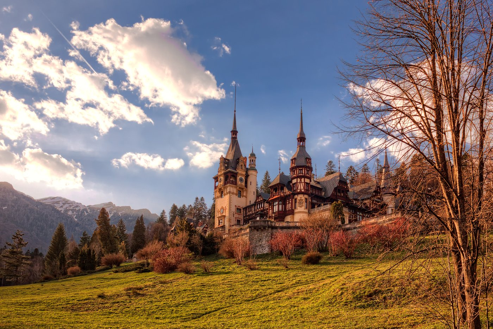

Right, I'll be straight with you – when most people think of Romania, they immediately picture Dracula's castle. And fair enough, it's there and it's brilliant. But Romania's got so much more than just the vampire vibes. This country is absolutely packed with some of the most incredible castles in Europe, and honestly, after visiting back in 2022 for our 9th country adventure, I can confidently say it's become one of our favourite destinations.
Hannah and I have been properly obsessed with castle-hopping around Europe, and Romania completely delivered. The history, the architecture, the legends – it's all there. Plus, it won't absolutely rinse your bank account like visiting castles in some other European countries might.
So here's our guide to the absolute best castles you need to see in Romania.
Peleș Castle – The Fairytale Palace
Let's start with what I reckon is one of the most beautiful castles not just in Romania, but in the whole of Europe. Peleș Castle sits in the Carpathian Mountains near Sinaia, and the first time we saw it, I actually stopped in my tracks. It looks like something straight out of a Disney film.
Built in the late 1800s as a summer residence for King Carol I, this place is absolutely stunning. We're talking 160 rooms, intricate wood carvings, stained glass windows, and enough artwork and artifacts to keep you wandering around for hours. The grand marble staircase alone is worth the visit.
Here's a mad fact for you – Peleș was the first castle in Europe to be fully electrified. They even had central heating running through the walls and floors back in the 1880s. Meanwhile, most of Britain was still using candles and freezing their bits off.
The castle is surrounded by gorgeous gardens and offers proper postcard views of the mountains. If you've got time, check out Pelișor Castle nearby too – it's smaller but has this beautiful Art Nouveau style that Queen Marie designed herself.
Top tip: Get there early or go midweek if you can. The place gets absolutely mobbed with tourists, especially in summer. It's closed on Mondays and Tuesdays, so plan accordingly.
Bran Castle – The Dracula Connection
Alright, let's address the elephant in the room – or should I say, the vampire in the castle. Bran Castle is famous worldwide as "Dracula's Castle," and yeah, it's definitely worth visiting. But here's the thing: Dracula (the fictional character) never actually lived here, and Vlad the Impaler (the real bloke who inspired the legend) probably never owned it either.
That said, I totally get why Bram Stoker's novel linked this place to vampires. The Gothic towers, the narrow winding staircases, the dark corridors connecting 60 timber rooms – it's got that proper eerie atmosphere. The castle sits dramatically on a cliff edge, and when the mist rolls in, it looks absolutely perfect for a horror film.
Inside, there's a fascinating collection of medieval furniture, weapons, and armor. The castle also has loads of stuff from Queen Marie of Romania, who used it as a royal residence in the early 1900s. The underground passages are particularly cool if you're into that sort of thing.
Location: About 30km from Brașov, making it an easy day trip.
Halloween vibes: They go all out with events. You can even win a chance to spend Halloween night inside the castle. Absolutely mental.
Corvin Castle – The Gothic Masterpiece
If I'm being honest, Corvin Castle might actually be my favourite that we didn't get to visit (gutted we ran out of time). Also known as Hunyadi Castle, this 14th-century fortress in Hunedoara is the largest medieval building in Romania and one of the most impressive Gothic castles in Europe.
High towers, a proper drawbridge, inner courtyards, a chapel, and about 50 rooms filled with medieval art and artifacts. The Knights' Hall is impressive, and there's even a well dug 100 feet into stone.
The legends are brilliant too. There's the Bacon Tower — originally a chapel but later used for storing food, especially bacon. They packed the cellar with ice to keep it cool through summer. Very medieval, very clever.
Getting there: It's in Hunedoara — a bit out of the way, but totally worth it. Best reached by car.
Cantacuzino Castle – Mountain Views and Elegance
Located in Bușteni, Cantacuzino Palace is another absolute stunner. Built in 1911 for Prince Gheorghe Grigore Cantacuzino, it sits at the base of Mount Zamora with jaw-dropping views of the Bucegi Mountains.
The gardens are massive and beautifully kept, and the exhibitions inside the castle are genuinely interesting. If you're into photography, you're going to have a great time here.
Top tip: It's close to Sinaia, so you can do both Peleș and Cantacuzino in a single day.
Făgăraș Fortress – The Strategic Stronghold
Făgăraș Citadel is different from the ornate palaces. Built in 1310 for pure defense, this fortress protected Transylvania from Tatar and Ottoman invasions.
Its massive walls were doubled in 1526, turning it into one of the strongest fortifications in the region. Walking through it feels like stepping straight into medieval Romania.
Sturdza Castle – Romance and Serenity
If you want something peaceful and romantic, Sturdza Castle in Miclăușeni is spot-on. The grounds include a lake and huge old trees, and the castle itself is a gorgeous Neo-Gothic creation.
Its family motto “Beauty shines everywhere” is engraved on the façade — a bit dramatic, but honestly, fair enough.
Iulia Hașdeu Castle – A Father's Tribute
This one’s emotional. Bogdan Petriceicu Hașdeu built this castle after his daughter Iulia — a prodigy accepted into the Sorbonne at age 19 — died of tuberculosis.
Legend has it the plans were dictated by Iulia herself during spiritism sessions. Whether you buy into that or not, the symbolism throughout the castle is pretty moving.
Getting Around Romania's Castles
By car: Best option for flexibility. Romanian driving can be “interesting,” so stay sharp.
By train and bus: Major towns like Sinaia and Brașov are easy to reach. More remote castles require mixing transport methods.
Organized tours: Great for convenience — loads of day trips from Bucharest cover the main castles.
Where to Stay
Brașov: Best for Bran Castle + exploring Transylvania.
Sinaia: Ideal for Peleș + mountain views.
Bucharest: Perfect hub for day trips + organised tours.
Final Thoughts
Romania's castles are genuinely some of the best in Europe, and the fact they're not as crowded or expensive as others makes them even better. From Gothic fortresses to elegant palaces and dramatic mountain settings, Romania is a proper underrated gem.
Our 2022 trip — our 9th country together — was absolutely brilliant. You could easily spend weeks castle-hopping and still not see everything.
So if you're planning a trip to Romania, don't just stick to Bran Castle because of the Dracula hype. Explore the rest too — you won't regret it.
Now, if you'll excuse me, I need to start planning our next trip back. We've still got Corvin Castle and a few others to tick off the list...